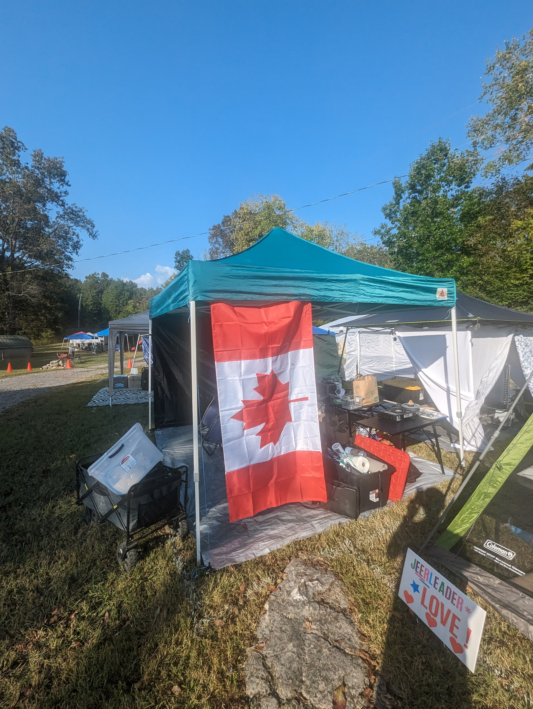
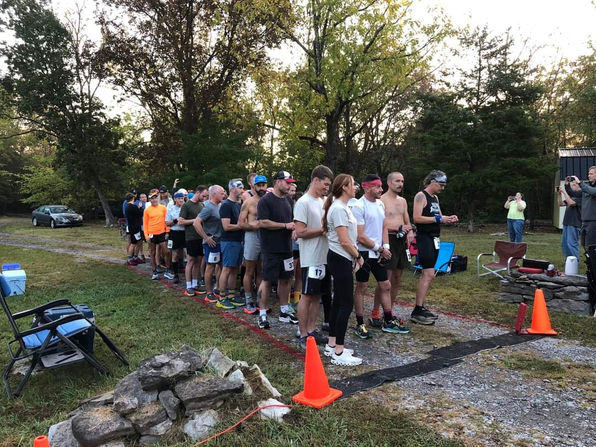
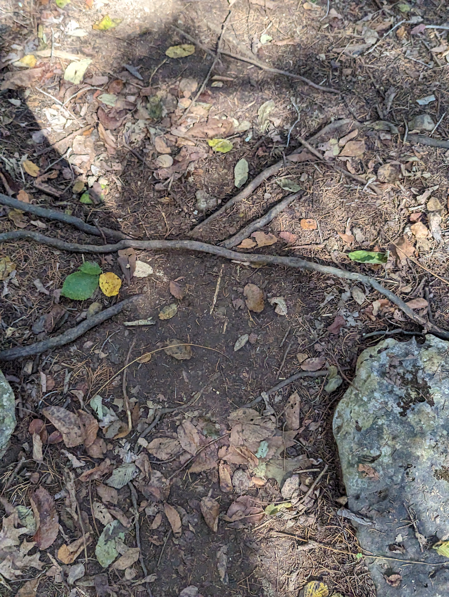
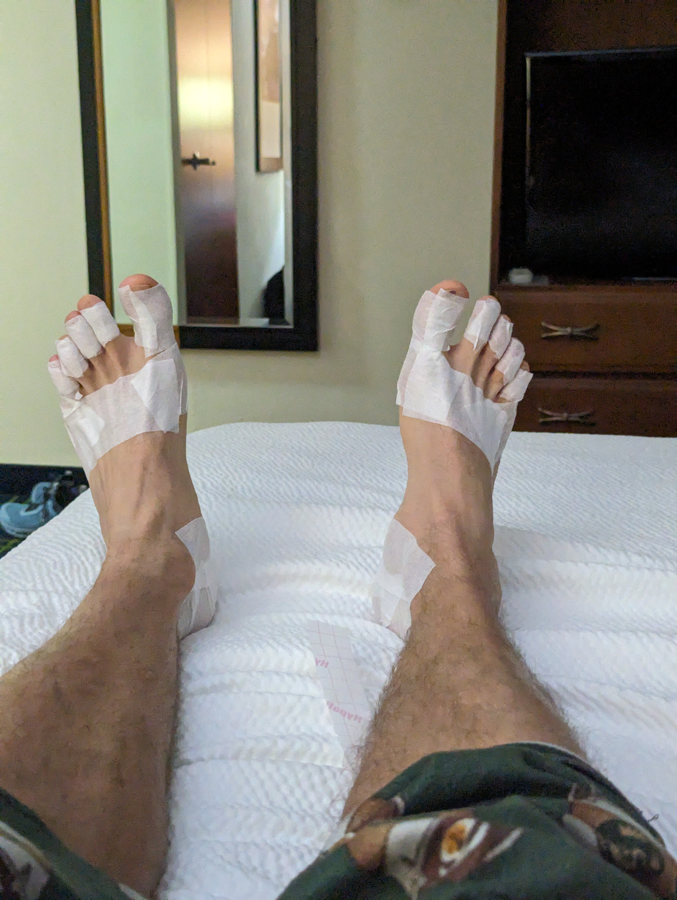
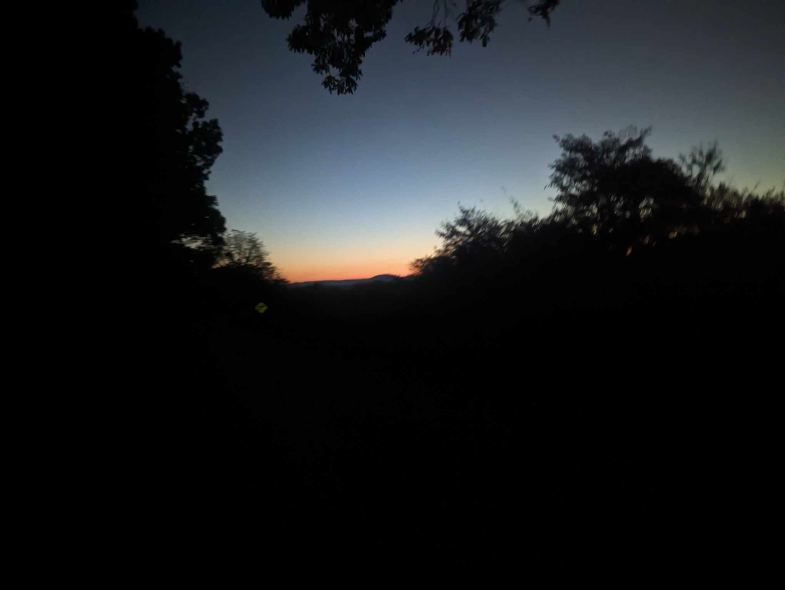
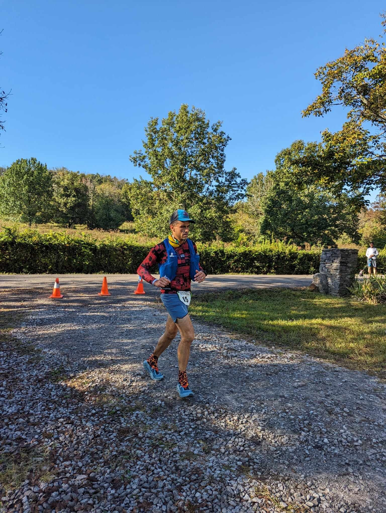
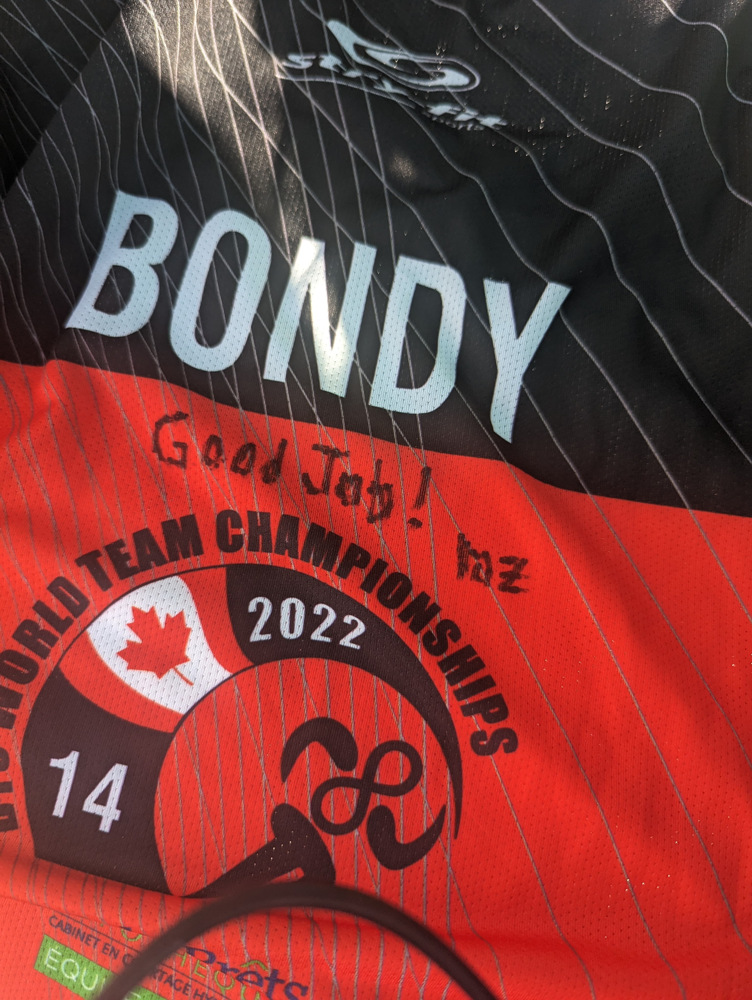

Little Dog's Backyard Ultra: Take 2
For the second time, I stood at the starting line of Little Dog’s Backyard Ultra, my heart racing with adrenaline. Memories of my last race started to flood back and I wondered if I could do any better than the last time.
Serg, a friend and colleague, crewed for me. We covered a 967km drive post-work on Thursday, reaching our destination by Friday afternoon to set up camp. The advantage of driving? I had all my gear at my fingertips. Given the convenience, I’d choose to drive again.
After setting up camp, we walked through the course. We encountered numerous spider webs on the course. I made a mental note to NOT be first on the first trail loop on the mornings of the race to avoid the fresh spider webs.

The goal of doing this race was to get some more experience on the world championship course. The world championship, Big Dog’s Backyard Ultra Individual Championship, occurs biennially.
Little Dog’s is the less hyped up grassroots version of the event and it happens 3 weeks before Big Dog’s on the same course. The winner of each country for Big Dog’s Backyard Ultra National championship in 2022, and some people with the highest loop counts in the world get invitations for Big Dog’s. I would like to get good at that course so that when I make it to the individual world championships one day, I’ll be ready.
The race started at 7:00AM on Saturday with ~60 people.

My planning for this Backyard was a bit different from previous backyard ultra races. My goal this time was for sustainability and repeatability. In past races I detoxed from caffeine a couple weeks before the race, and tried to delay the amount of time as much as possible before I had my first intake of caffeine. This time I didn’t detox and made some calculations based on the half life of caffeine to make sure the caffeine in my system would be near 0 by midnight. This was a much better strategy, I was set up for a repeatable pattern instead of ramping up to last as long as I could and setting myself to blow up at some point.
My preparation for the race was mostly smooth. I achieved personal bests in all distances, ranging from 5km to the 50km. While I did take some time off for vacation, which interrupted my training regimen, it was great to enjoy some family time. The kids returning to three different schools after summer vacation made my morning routines a bit difficult. Fortunately, my incredible wife has always been supportive of my aspirations. She allowed me to train on many school mornings before I headed to work.
The race’s day loops were demanding due to the technical trails filled with twists, rocks, and roots. Autumn leaves blanketed the path, but obscured the ground, turning every step into a guessing game for hidden obstacles. Stubbed toes and tripping hazards were common. The course’s elevation was notably high for this kind of format.
|  |

|

|

|

|
While I was deep into the race, my wife called in a concerned tone around the 9th hour: “Are you OK?!”. I replied, puzzled, “Yes… why?” It appeared someone mistakenly marked me as DNF (Did Not Finish). After completing the loop, I approached the timing desk. They acknowledged the error, promptly corrected it, and apologized. Additionally, there were two instances where my time was recorded as over 59 minutes, a red flag for potential elimination. Though I consistently finished the loops well within the time, my bib wasn’t picked up by the tracker, possibly due to its sideways placement. Next time, I’ll ensure my bib directly faces the tracker.
The night before the race, I enjoyed a surprisingly good sleep, a first for me pre-race. Although I woke up a few times, I managed to drift back to sleep easily. The 1.5 melatonin gummies I took seemed to do the trick.
In terms of nutrition, I believe I consumed too few calories. I overlooked many nutritious items we had bought, which got buried amidst other supplies. For the next race, I’ll prepare a written menu, allowing my crew to suggest meal options. While I had packed chocolate bars, they melted in the heat. Next time, I’ll store them in the cooler and also pack alternative sugary treats for when I need an energy boost.
I mistakenly purchased almond milk with ten times the usual protein content for my milkshake, only realizing this after the race. After consuming the milkshake, I felt a noticeable drop in my performance during the subsequent loop. Carbohydrates, being quicker to digest, are typically more suitable for such races, while excessive protein can sometimes cause digestive discomfort. Fortunately, aside from this hiccup, there were no lasting adverse effects, and I decided to forgo any more milkshakes for the remainder of the race.
During tough moments, I played an audio recording. It was my voice, listing dozens of reasons and core beliefs for why I do these races. I also practiced Cognitive Behavioral Therapy (CBT) which suggests that when negative thoughts come up, you should test them against all of your core beliefs to test their validity.
I taped my feet before this event instead of using some kind of lubricant on them. I think this worked very well and I’ll do this in future races as well. I did have 1 tiny blister that I didn’t notice during the race when I took the tape off. I could have done 2 layers though and I think it would have been perfect.

The night loops are on a different course, on the road. I found these easy and came in with 10-13 minutes of rest time for every loop. I used most of these loops to get a little sleep. This was the first backyard ultra where I was able to sleep. I’m sure this was thanks to the near 0 caffeine in my system.
I had trouble staying awake for the 2am and 3am loop. Previous backyard races had me struggling during these same hours. It was admittedly a struggle but not something that I would have quit over. I was extremely happy to see the sunrise starting and I played Circle Of Life from the Lion King to celebrate.

The second day was a struggle. My time to get in was 56 minutes, giving me only 4 minutes of rest. I maintained that pace despite trying to go faster the next 2 loops, and on the 4th 2nd day loop I came in just after the 3 whistles that signify only 3 minutes to start the next loop.
The heat was significant and I used ice to help keep my body cool. This did result in my clothes being very wet over time, which led to chafing, but nothing uncontrollable. Sauna heat training helped cope with the heat. It was the first time during one of these hot races that I didn’t feel like I overheated during the race.

On my last loop I went out exhausted and with little energy. My pace started to climb up and got past the under 9:00min/km requirement. I tried to make up time but simply couldn’t. My body either didn’t have the energy or was worn out. If I had to give a reason I’d say that I should have either eaten more or that I simply wasn’t strong enough. I need more strength training as there’s no places close to my home to train on trails like that.
I didn’t quit on the 29th loop, but I was just too slow. Mentally I felt strong and nothing was so painful that I couldn’t cope with it. On a different course, I think the outcome would have been very different.
I made it to 3rd place. My friend Justin who drove up the night before and shared my tent and crew was the winner. He did amazing and was still strong at the end. However, as he gets older, I’ll get stronger 😛.

I collected a nice souvenir. I had Laz sign my jersey from last year’s national championship race.

Every race teaches me something, this one taught me that I simply wasn’t good enough to win yet. And that’s OK. Nothing went wrong, nothing “happened” to me. I’ll be working on my core and strength on top of my running. I’m certain I’ll do this course again. If not at Big’s, then at least at Little’s. But my focus and dreams of one day getting to Big’s Individual Championships remain unchanged.
Thank you Gary (Laz) and Sandra for putting on an excellent race that gives access to the Big’s course to people like me.